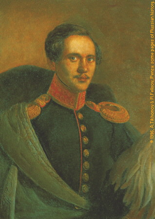
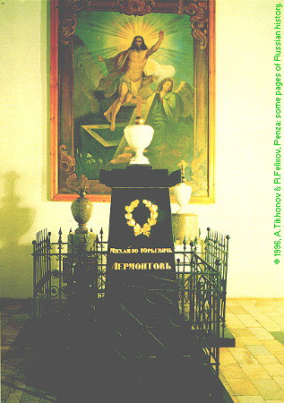
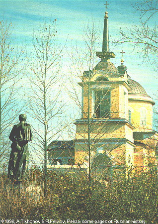
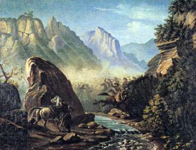
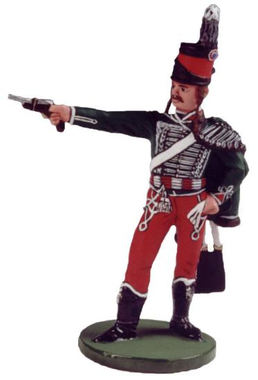
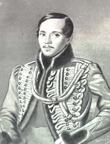
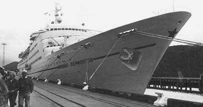

Lermontov
"O vanity! You are the lever by means of which Archimedes wished to lift the earth!"
"Happy people are ignoramuses and glory is nothing else but success, and to achieve it one only has to be cunning."
- Both attributed to Lermontov

Biography
*Mikhail Yur’yevich Lermontov, “the
poet of the Caucasus,” was born on October 15, 1814 in Moscow. His
mother, Mariya Arsenyeva died in 1817, after a falling out between his
father and his grandmother. His father, Yuri Lermontov, was a captain
in the military and was seldom at home. For these reasons young Mikhail
was raised by his grandmother, Elizabeth Alekseevna, who saw to it that
he received an excellent education, procuring tutors for him before sending
him to gymnasium in Moscow. Much like Pushkin, Lermontov grew up in an
intellectual environment and was introduced to literature at an early
age. By the time he went to gymnasium, he was already familiar with Goethe
and Schiller. While at gymnasium, Lermontov was introduced to the work
of Pushkin and became enamored with Byron. He wrote his first poem at
the age of 14. At this time he also developed a reputation for sharp and
sardonic wit. In August of 1830 Lermontov began attending classes at Moscow
University. However, after a short time he dropped out and enrolled at
the school of cadets in St. Petersburg, eventually becoming an officer
in the Guards.
* Lermontov came into the public eye in 1837 when, on the occasion of
Alexander Pushkin’s death in a duel, he wrote a poem called “On
the Death of the Poet.” This poem, addressed to the tsar, amounted
to an attack on Russian society, accusing it of complicity in Pushkin’s
murder. This poem apparently reached the ears of the tsar, and Lermontov
was sent to the Caucasus. The environment there seems to have agreed with
him, for he wrote his best poetry, and was famous when he returned to
St. Petersburg in 1838. Even in celebrity Lermontov was, however, continuingly
critical of Russian high society. A duel with a son of the French Ambassador
resulted in Lermontov being forced to return to the Caucasus in 1839.
At this time he completed A Hero of Our Time, his only full-length novel.
Like his character Pechorin, Lermontov took part in a duel on the edge
of a cliff in 1841. Unfortunately, the outcome of this duel resembled
Pushkin’s life more than it resembled Pechorin’s fictional
existence, for Lermontov was shot in the heart.
* Lermontov’s most famous works include the poems “The Angel,”
and “The Song of Merchant Kalashnikov,” the volumes “The
Demon,” and “Mtsyri,” and his sole novel A Hero of Our
Time.
“Lermontov, Mikhail Yurevich.” The Columbia Encyclopedia. 6th ed. 2001-05. Date of access: 10/11/05. http://www.bartleby.com/65/le/lermonto.html
“Mikhail Lermontov.” Wikipedia: the free encyclopedia. Date of access: 10/23/05. http://en.wikipedia.org/wiki/Mikhail_Lermontov

A picture of Lermontov's grave
Lermontov's Works
. VESNA, 1830
. ISPANTSY, 1830
. ANGEL, 1831 - Enkeli
. PARUS, 1832 - Purje
. KHADZHI ABREK, 1835
. KNIAGINIA LIGOVSKAIA, 1836
. MASKARAD, 1836 - Masquerade
. SMERT POETA, 1837
. PESNJA PRO TSARJA IVANA VASIL' EVICA, MOLODOGO OPRICHIKA I UDALOGO KUPCA
KALASHNIKOVA, 1837 - A Song About Czar Ivan Vasiliyevich, His Young Bodyguard,
and the Valiant Merchant Kalashnokov
. TAMBOVSKAIA KAZNACHEISHA, 1837-38 - The Tambov Treasurer's Wife
. SASHKA, 1835-39
. GEROI NASHEGO VREMENI, 1840 - A Hero of our Time - suom. Aikamme sankari
. MTSYRI, 1840 - The Circassian Boy
. KAZATSYA KOLYBELNAYA PESNYA, 1840
. DEMON, 1841 - Demooni
. VADIM, 1973
. POLNOE SOBRANIE SOCHINENII, 1936-37 (5 vols.)
. SOCHINENIIA, 1954-57 (6 vols.)
. The Demon and Other Poems, 1965
. A Lermontov Reader, 1965
. SOBRANIE SOCHINENII, 1969 (4 vols.)
. SOBRANIE SOCHINENII, 1975 (4 vols.)
. Selected Works, 1976
. Narrative Poems by Pushkin and Lermontov, 1983
. Major Poetical Works, 1984 (trans. by Anatoly Liberman)
. SOBRANIE SOCHINENII, 1989 (4 vols.)
POLNOE SOBRANIE STIKHOTVORENII, 1989 (2 vols.)

A Statue of Lermontov
Works of and Pertaining to Lermontov In Our Library!
Russian Literature and its Demons, edited by Pamela Davidson
Main Stacks Main Lvl PG2987.D45 R87 2000
Lermontov's A Hero of Our Time : a
critical companion , edited by Lewis Bagby
Main Stacks Main Lvl PG3337.L4 G49 2002
Writing as Exorcism : the Personal
Codes of Pushkin, Lermontov, and Gogol,
by Ilya Kutik
Main Stacks Main Lvl PG3015.5.A8 K88 2005
Vadim by Mikhail Lermontov ; translated
and edited by Helena Goscilo
Main Stacks Main Lvl PG3337.L4 V313 1984
Major Poetical Works by Mikhail Lermontov
; translated from the Russian with a biographical sketch and an introduction
and commentary by Anatoly Liberman
Main Stacks Main Lvl PG3337.L4 A253 1983
Mikhail Lermontov by John Garrard; Main Stacks Main Lvl PG3337.L46 G3 1982
Lermontov : a Study in Literary-Historical
Evaluation by Boris Eikhenbaum ; translated by Ray Parrott and Harry Weber.
Main Stacks Main Lvl PG3337.L46 E413
Lermontov : Tragedy in the Caucasus
by Laurence Kelly
Main Stacks Main Lvl PG3337.L42 K4
Mikhail Lermontov : Selected Works
Main Stacks Main Lvl PG3337.L4 A26 1976 c.2
Michael Lermontov; biography and translation,
by C.E. L'Ami and? Alexander Welikotny.
Main Stacks Main Lvl PG3337.L4 A25
A Hero of Our Time / M. Yu. Lermontov
; translated with an introduction by Paul Foote.
Main Stacks Main Lvl PG3337.L4 G413 1966
A Lermontov Reader, edited, translated,
and with an introduction by Guy Daniels.
Main Stacks Main Lvl PG3337.L4 A23
Lermontov by Janko Lavrin ; Main Stacks Main Lvl PG3337.L4 Z856
A Hero of Our Time: a novel translated
from the Russian by Vladimir Nabokov in collaboration with Dmitri Nabokov.
Main Stacks Main Lvl PG3337.L4 G42 1958

A painting of a battle in the Caucauses
by Lermontov himself
A Hero of Our Time : Chapter Summaries
Bela: A traveling soldier who later becomes our narrator inquires about a man named Grigoriy Aleksandrovich Pechorin who seems to have a recent acquaintance of his, Maksim Maksimich rather charmed. Maksim answers the inquiry with a story about Pechorin. In this story the character of Pechorin is described as extremely charming and somewhat manipulative. At a wedding Pechorin meets a young, beautiful princess and is immediately spellbound. Similarly a local tradesmen/ rogue Kazbich has also taken an interest in Bela. Kazbich is also the owner of an extremely impressive and loyal steed which he treasures. This horse is especially envied by a young, stubborn prince named Azamat. Pechorin eventually convinces Azamat that if he will give his sister Bela to Pechorin, that Pechorin will get Azamat Kazbich’s horse. Naturally the plan succeeds and Bela becomes imprisoned in Pechorin’s quarters. However, Bela eventually warms up to Pechorin and begins to love him. Bela’s infatuation causes Pechorin to lose interest in her as he goes on long hunting expeditions without telling her. Maksim reproaches Pechorin for losing interest in the girl, to which Pechorin responds “My soul has been impaired by the fashionable world..I have an insatiable heart” (41). One day Kazbich shows up to where Bela had been living and manages to kidnap her while Maksim and Pechorin are hunting. When Maksim and Pechorin pursue Kazbich, he stabs Bela with a dagger, killing her and scampers away. Bela’s death upsets Pechorin and he is later reassigned to Georgia.
Maksim Maksimich: Maksim and our narrarator meet again at a military post and learn that Pechorin is nearby. Maksim, having been charmed by Pechorin, immiediately sends for him. Pechorin shows up a few days later and seems very uninterested with Maksim, who feels that he and Pechorin were great friends. Pechorin tells Maksim very little about his recent affairs, refuses to stay for tea, and leaves Maksim with his journal. Maksim, upset at being rejected leaves the journal with our narrarator who decides to publish this journal. From this chapter on, the story is told from the perspective of Pechorin through the texts of his journal.
Taman: Pechorin travels to a gloomy town on the seacoast of Russia called Taman. When inquiring about a local landlord, Pechorin meets a young blind orphan and finds a room for the night. Late in the evening Pechorin sees the blind boy make his way down to the harbor with a bundle. The blind boy meets with a young girl, taking about the arrival of a man named Yanko. Eventually Yanko arrives and it becomes apparent that there is some sort of smuggling operation taking place. The next morning Pechorin confronts the young boy about his encounter at the harbor and the blind boy denies all these allegations, and the landlady supports him, scorning Pechorin. In the evening the young girl Pechorin saw by the harbor invites him in a boat and almost succeeds in drowning him, fearing that he will tell others about their operation. When Pechorin reaches the shore he witnesses Yanko telling the blind lad that they can no longer work this smuggling operation because of Pechorin’s meddling. The young girl leaves with Yanko, and the blind boy is told to stay in the town of Taman. Pechorin laments that he interfered with an honest smuggling operation, and leaves Taman the next day.
Princess Mary: Pechorin arrives at the town of Pyatigorsk, seeing an old acquaintance Grushnitski. Grushnitski is characterized as a brave man who was wounded in combat. Pechorin sees two ladies and is told that they are Princess Ligovskoy and Princess Mary. Pechorin seems to admire the beauty of Princess Mary. After Princess Mary picks up a glass which the wounded Grushnitski he becomes infatuated with her. Pechorin scoffs at his new infatuation just for the sake of infuriating Grushnitski. The next day Grushnitski meets with a friend of his, doctor Werner and they discuss various things including Princess Mary and Grushnitski’s interest in each other. The doctor suspects that Pechorin is scheming to make a fool of Grushnitski and relays information about the Princess to him. The doctor also informs Pechorin that a former lover of Pechorin’s has arrived in town. Pechorin purposely annoys the princess, outbidding her for a rug and stealing many of her guests at various parties by drawing attention to himself. Pechorin meets his former lover named Vera and learns that she is married to a man named Semyon Vasilievich. They embrace and kiss. Pechorin then reveals to the reader that he has managed to never fall a slave to a woman he loves, and that he prefers women who don’t have wills of their own. Upon meeting Grushnitski who is still courting the princess, Pechorin learns that the princess does indeed hate him, finding him arrogant and rude. At a ball in the Princess’s palace, Pechorin saves Princess Mary from having to dance with a drunk earning him the gratitude and acquaintance of both princess Mary and her mother. Pechorin begins to tell the reader of his “system” with which he can manipulate people and situations. He also mourns the fact that he is never fulfilled with women, that he is not capable of passion or romance. Pechorin continues to manipulate the princess into loving him and has to balance his desire to manipulate her with his desire to maintain a relationship with Vera. At a ball Grushnitski desperately asks the princess why she has changed so much when speaking with him. Grushnitski and other men continue to ask the princess to dance to keep Pechorin from dancing with her. Pechorin decides to move to Kislovodsk, and continues meeting with Vera who is clearly in love with him. Similarily, Princess Mary confesses her love for Pechorin. Pechorin learns of a plan in which Grushnitski will challenge him to a duel in order to expose him as a coward. The catch is that the pistols will not be loaded. As he sneaks down into Princess Mary’s bedroom Pechorin is caught by Grushnitski who uses this encounter to challenge Pechorin to a duel. Pechorin agrees. Grushnitski and his cronies change their plan and decide to put a bullet only in Grushnitski’s gun. Pechorin decides to still go to the duel realizing that he will be able to manipulate the situation to his advantage. On the day of the duel Pechorin asks Grushnitski if they can duel on a cliff so as to guarantee the death of the loser. Grushniski takes the first shot and purposely misses, realizing that the fight is unfair. Pechorin asks for his pistol to be reloaded, then shoots and kills Grushnitski. Vera leaves town, leaving Pechorin a good bye love letter. Vera’s departure clearly upsets Pechorin. Pechorin decides to also leave town and tells the princess he cannot marry her.
The Fatalist: To prove his point
about fate to Pechorin, a man named Lieutenant Vulich decides to play
a game of Russian roulette with a single shot pistol. Pechorin maintains
that there is no predestination while Vulich maintains the opposite. Pechorin
is positive from the beginning that Vulich will die that night, but when
Vulich tries to shoot himself with the pistol it doesn’t fire. Pechorin
is shocked at what has happened and decides that he does in fact believe
in predestination. However, Pechorin later receives news that Vulich has
in fact been killed. Pechorin hunts down Vulich’s killer and helps
the authorities detain him. Pechorin concludes the chapter and novel turning
over the arguments for and against becoming a fatalist.

Dueling
* A very common theme in 19th century
Russian literature including and especially Mikhail Lermontov’s
A Hero of Our Time, is that of the duel. Not only was dueling a large
part of Russian literature but also a large part of Russian life. In fact
both Alexander Pushkin and Mikhail Lermontov fought in several duels.
It is clear that both men had a certain respect for this tradition which
ultimately led to both of their deaths. While it is unclear when the first
duel took place, there are several rules and practices that appear to
be common in many cultures.
* The purpose of a duel is for an offended party to fairly avenge the
insult of an offending party. This intent was usually signified not only
by a direct challenge but by slap in the face, either with a glove or
hand, and/or the offended tossing his glove at the feet of the defender.
Typically though not always, duels were fought between those in the same
social status. It was deemed inappropriate for someone of a lower class
to challenge someone from a higher class to a duel. Similarly those in
higher classes thought the lower classes unworthy of dueling with them.
However once a challenge was made, it was rarely declined. The declination
of a duel was seen to be an enormous sign of cowardice and dishonor.
* Though there were many standardized procedures followed in a duel, not
all were fought in the same manner. Duelers usually chose seconds who
were charged with naming an appropriate field on which the duel was to
take place, as well as endure the fairness of the duel at all stages of
the proceedings. Usually duelers were placed back-to-back and told to
walk a pre-determined amount of spaces (typically the more serious the
insult, the fewer paces). In one type of dueling, the shooters were allowed
to turn and fire as soon as they had walked the required paces. Clearly
this allowed for a good amount of cheating and required amending. Later
duelers were to wait for the drop of a handkerchief in order to fire.
* In Lermontov’s A Hero of Our Time a different form of dueling
is portrayed. Shooters walk a determined amount of paces, but draw lots
and alternate shots. This type of duel was not necessarily fought to the
death. Depending on the rules the shooters and seconds had established,
a duel could be fought until death, first blood, one’s inability
to continue due to injury, or until each shooter had fired one shot. Usually,
the offended party reserved the right to end the duel at any point if
he felt his honor satisfied. Such was how most conflicts were resolved.
Fist fights were uncommon in 19th century Russia. Those at odds either
let there misunderstandings slide or settles it with a duel.
Another theme that is present in Lermontov’s A Hero of Our Time
and 19th century Russian culture is the notion of Russian roulette. The
origin and uses of this game are extremely unclear though there are many
legends and theories as to when it was first played. Nevertheless the
implication that this actually occurred in 19th century Russia speaks
volumes about Russian culture.
* While the game that is called Russian roulette was played in 19th century
Russia, it was never referred to as such. In fact the first mention of
this game under that name was in a short story by George Surdez that appeared
in a January 30th, 1937 issue of Collier’s magazine. It is thought
by many that Russians called this game “cuckoo”. However this
name is typically reserved for a game in which several people spread out
in a dark room with an armed man in the middle. One of the unarmed men
yells “cuckoo” and the shooter tries to shoot at the noise.
While this game is notably dissimilar to Russian roulette, it is equally
ludicrous.
* Russian roulette refers to a game in which a revolver is loaded with
one pistol. The barrel is spun and a participant pulls the trigger with
the barrel aimed at his own head. Many believe that this game was invented
to entertain Russian prison guards who forced their prisoners to play
to pass time. Others however believe that is was invented by Russian military
officers. One theory is that is was done to show masculinity and courage.
Another is that a form of this game was used by dishonored military officers.
Officers who felt they had failed or been dishonored removed one bullet
from a fully loaded revolver, pointed the barrel at their heads, and pulled
the trigger in front of their comrades. However in the 19th century, the
standard issue revolver was the M1895 Nagant, a gun whose chamber could
not be spun. This fact although contradictory to the militaries use of
this game in the 19th century does not solidify the impossibility of officers
inventing or playing some form of this game.
* Another theme that dominates 19th century Russian literature is military
culture. There are many mentions to the Caucuses and Turks. This should
come as no surprise since Russia was basically at war at the Turks in
the Caucuses for three centuries. One of the major conflicts began in
1768 when Sultan Mustafa III declared war on Catherine the Great due to
Russia’s intervention with Turkish affairs in Poland. Although Russia
experienced relative success it was reversed in 1806 Sultan Selim II expelled
pro-Russian governors in Moldovia and Walachia. Throughout the 18th and
19th century tensions between Russians and Turks led to the heavy militarization
of the Caucus Mountains.
* It is apparent that there are several themes commonplace in 19th century
Russian literature. Not surprisingly many of theme relate to the military.
This is understandable since all Russian men, including great authors
such as Lermentov were forced to serve at least two years in Russia’s
armed forces. Furthermore the risk taking, honor proving machismo of Russian
men portrayed in 19th literature accentuates the harsh cultural lives
Russians were forced to endure.

Lovely Lermontov Links
http://www.poetryloverspage.com/poets/lermontov/lermontov_ind.html
A page full of translations of Lermontov’s poetry
http://www.geocities.com/y_volkov/
A generally fantastic and comprehensive page of Lermontov stuff. This
includes detailed biographical information and lots of good links to electronic
versions of Lermontov’s works and other pages.
http://www.namdar.dircon.co.uk/aaRussian/Lermon/lermon.htm
Another comprehensive Lermontov page complete with links to works and
a good biography. Perhaps not as spiffy as the former link but it has
a title in Cyrillic which lends it some legitimacy.
http://www.nzmaritime.co.nz/lermontov.htm
Mikhail Lermontov in the form of a cruise ship! A bit of a Soviet Titanic,
actually.
http://it.stlawu.edu/~rkreuzer/ltrn101/lermonto.htm
A Lermontov page by our neighboring institution of higher education, St.
Lawrence University. It appears to be a webpage for their Russian Lit
class.

A Soviet cruise ship named after Lermontov which sank off the coast of New Zealand
Who Are We?
We are student's of Professor Thomas Beyer's 19th Century Russian Literature Class, taken in the fall of 2005 at Middlebury College
What Is This?
A comprehensive look at Mikhail Lermontov and his works.
*Biography
*Works Written
*Works in our library
*Chapter summaries for Hero of Our Time
*Dueling Information
*Interesting Links